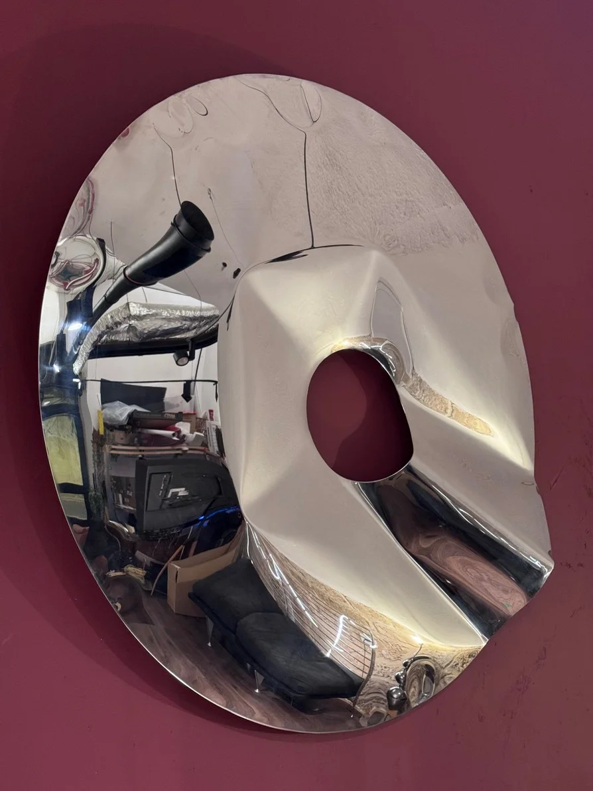

portal 120
פסל מראה לקיר
PORTAL מתחיל במעגל מדויק ובפתח הנגרע ממנו. שתי יריעות מפלדת אל-חלד נחתכות בלייזר, מרותכות בהיקף
ומנופחות באוויר. הלחץ מעביר את הגיאומטריה מן המישור אל הנפח ויוצר קפלים ומתיחות שאינם חוזרים בדיוק באותו
אופן. גימור המראה קולט את החלל, את האור ואת המתבונן, ומפרק אותם על פני הגוף הקמור.
מידה: קוטר 120 ס״מ עומק כ-5 ס״מ